Mapping protein-RNA interactions between a recombinant human PRC2 to RNA using RBDmap
Emma Gail
2019-10-22
This tutorial is still under development and may change slightly as it is being edited.
A Brief Introduction
This tutorial is relevant to the published paper RNA exploits an exposed regulatory site to inhibit the enzymatic activity of PRC21. However, the workflow can be used for data processed by MaxQuant.
Setting Up Our Environment
Install crisscrosslinkeR
If you have not done so already, please install crisscrosslinkeR:
library(devtools)## Loading required package: usethisinstall_github('egmg726/crisscrosslinker')## Skipping install of 'crisscrosslinker' from a github remote, the SHA1 (97295552) has not changed since last install.
## Use `force = TRUE` to force installationLoad Libraries
First, load the libraries needed for the package and tutorial.
library(ggplot2)
library(bio3d)
library(Biostrings)
library(seqinr)
library(RColorBrewer)
library(openxlsx)
library(viridis)
library(stringr)
library(svglite)
library(crisscrosslinker)
library(XML)
library(RCurl)Defining Our Variables
When loading the data, it is important to make sure that the files for input are named well so the functions will be able to correctly identify and organize the data. The input files for this analysis are output files of MaxQuant, holding information of tryptic peptides identified in each of the samples.
sys.path <- system.file("extdata/NSMB_RBDmap",
package = 'crisscrosslinker',
mustWork = TRUE)
sys.files <- list.files(sys.path)
head(sys.files)## [1] "Repeat01_NoXL_ArgC_eluate.txt" "Repeat01_NoXL_ArgC_input.txt"
## [3] "Repeat01_NoXL_LysC_eluate.txt" "Repeat01_NoXL_LysC_input.txt"
## [5] "Repeat01_UV_ArgC_eluate.txt" "Repeat01_UV_ArgC_input.txt"Each of the file names contains 3 pieces of information: the name of the experiment, if it is an input/eluate file, and which protease was used for the experiment.
If comparing between multiple experiments, indicate the experiment names in the code.
# experiment_names <- c('experiment1','experiment2')
experiment_names <- c('Repeat02_NoXL','Repeat02_UV')We will also need to load the FASTA file that was used during the initial MaxQuant analysis, where the tryptic peptides where identified. For more information on how this FASTA file was generated, please refer to Zhang et al. 2019.
fasta_file <- seqinr::read.fasta(system.file("extdata/NSMB_FASTA",
'PRC2_5m.fasta',
package = 'crisscrosslinker',
mustWork = TRUE))If the file format is from MaxQuant with an Andromeda score, you will need to set it. The default setting is 20 and we will explicitly set it in this demonstration.
cutoff_score <- 20Initializing the Data
Extracting the Hits
We are now ready to get a list of the relevant hits for our data.
sequence_hit_list <- rbd.makeSeqHitList(fasta_file = fasta_file,
file_format = 'txt',
cutoff_score = cutoff_score,
experiment_directory = sys.path)Here we have found all of the tryptic peptides that:
- Have an unambiguous LysC or ArgC cleavage site (i.e. includes R and K in either end, not both ends)
- Correspond to a protein name in the FASTA file
- Have an Andromeda score > our cutoff
Making an Input/Eluate Table
In this case, we want to compare the input and eluate data from the experiments, let’s make a table comparing the two.
input_eluate_table <- rbd.makeIETable(sequence_hit_list,
experiment_names)We can see how the results look here:
head(input_eluate_table[,c('sequence','input','eluate','protein')])| sequence | input | eluate | protein |
|---|---|---|---|
| ASMSEFLESEDGEVEQQR | 288150000 | 0 | SUZ12_Q15022 |
| ATWETILDGK | 2490900000 | 0 | SUZ12_Q15022 |
| DEVLSADYDLLGEK | 309200000 | 0 | EED_O75530 |
| DPNLLLSVSK | 49414000 | 0 | EED_O75530 |
| EAAFDDAVEER | 1168100000 | 0 | RBBP4_Q09028 |
| ECDPDLCLTCGAADHWDSK | 149440000 | 0 | EZH2_Q15910-2 |
In the table above, ‘sequence’ holds the tryptic of identified tryptic peptides that have passed the filtering criteria, ‘input’ and ‘eluate’ hold the intensity observed for these peptides in the input and eluate samples, respectively, and ‘protein’ holds the protein ID.
We can now move on to making a plot.
Making an Input/Eluate Plot
As you can see, many of the hits that were found in the input were not found in the eluate. We will filter those later. For now, we will plot everything.
rbd.makeIEPlot(input_eluate_table, experiment_names)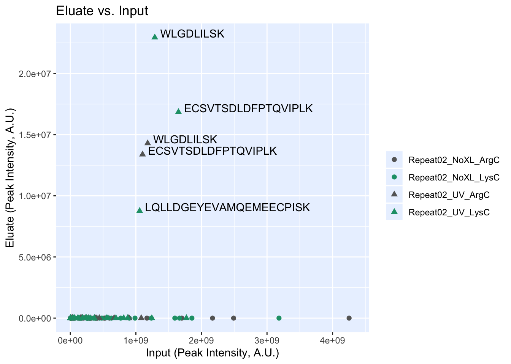
We can change the default settings of the plot, including colors and the title by inputting some more variables2:
name_of_experiment <- 'RBDmap Experiments: Input vs. Eluate'
rbd.makeIEPlot(input_eluate_table,
experiment_names,
palette = 'Pastel1',
fill = 'white',
colour = 'black',
size = 1,
title = name_of_experiment)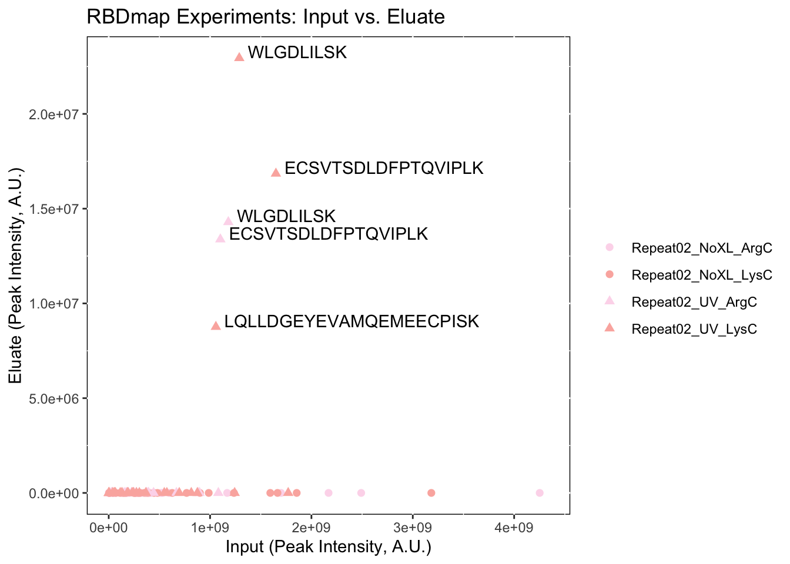
Finding the Binding Sites
Now that we have compared our control, we will remove all results that do not show up in the eluate files.
filtered_input_eluate_table <- input_eluate_table[input_eluate_table$eluate > 0,]
filtered_input_eluate_table| sequence | input | eluate | protein |
|---|---|---|---|
| ECSVTSDLDFPTQVIPLK | 1101400000 | 13380000 | EZH2_Q15910-2 |
| WLGDLILSK | 1180000000 | 14292000 | EED_O75530 |
| ECSVTSDLDFPTQVIPLK | 1649500000 | 16849000 | EZH2_Q15910-2 |
| LQLLDGEYEVAMQEMEECPISK | 1057200000 | 8763700 | SUZ12_Q15022 |
| WLGDLILSK | 1288100000 | 22946000 | EED_O75530 |
We’ll use these results for finding binding sequences. We’ll first get a data.frame of the binding sequences aligned to the FASTA file.
bs_output_fasta <- rbd.getBSfromIET(filtered_input_eluate_table,
fasta_file = fasta_file,
align_to = 'FASTA')
bs_output_fasta[c('pro_name','binding_sequence')]| pro_name | binding_sequence |
|---|---|
| EZH2_Q15910-2 | TLNAVASVPIMYSWSPLQQNFMVEDETVLHNIPYMGDEVLDQDGTFIEELIKNYDGKVHGDR |
| EED_O75530 | SCENAIVCWKPGKMEDDIDKIKPSESNVTILGR |
| EZH2_Q15910-2 | QRRIQPVHILTSVSSLRGTR |
| SUZ12_Q15022 | NRR |
| EED_O75530 | IHFPDFSTRDIHRNYVDCVR |
Note that the ‘binding_sequence’ column holds the sequences of the peptides that were crosslinked to the RNA, based on the tryptic peptides identified by MaxQuant, the sequence of the protein and the proteases used in the assay (ArgC and LysC); see Castello et al. 2016 for more information on how RNA-binding sites are detected using RBDmap.
Making a Heatmap
Let’s make a heatmap and sort the sequences by their names.
bs_freqVector <- rbd.freqVector(bs_output = bs_output_fasta,
name_by = 'pro_name',
heatmap = TRUE,
db_selection = 'FASTA')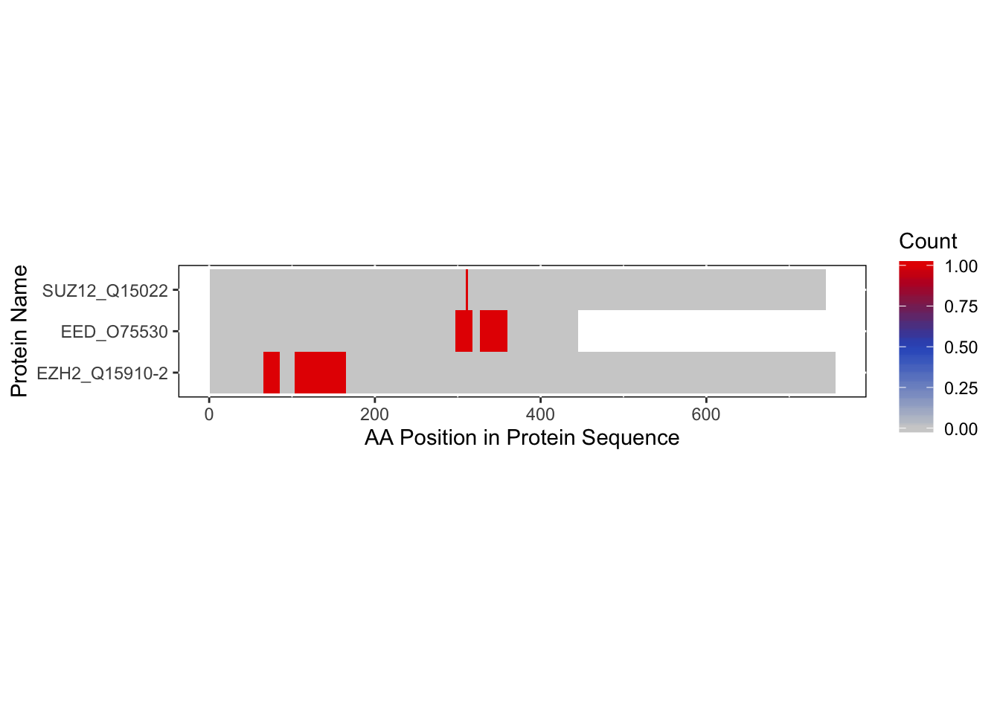
We can also adjust the colors of the heatmap if we so wish. You can put in a standard RColorBrewer or viridis palette or a list of hexcodes and/or standard R Colors.
rbd.freqVector(bs_output = bs_output_fasta,
name_by = 'pro_name',
heatmap = TRUE,
db_selection = 'FASTA',
colors = "Blues",
save_plot = FALSE)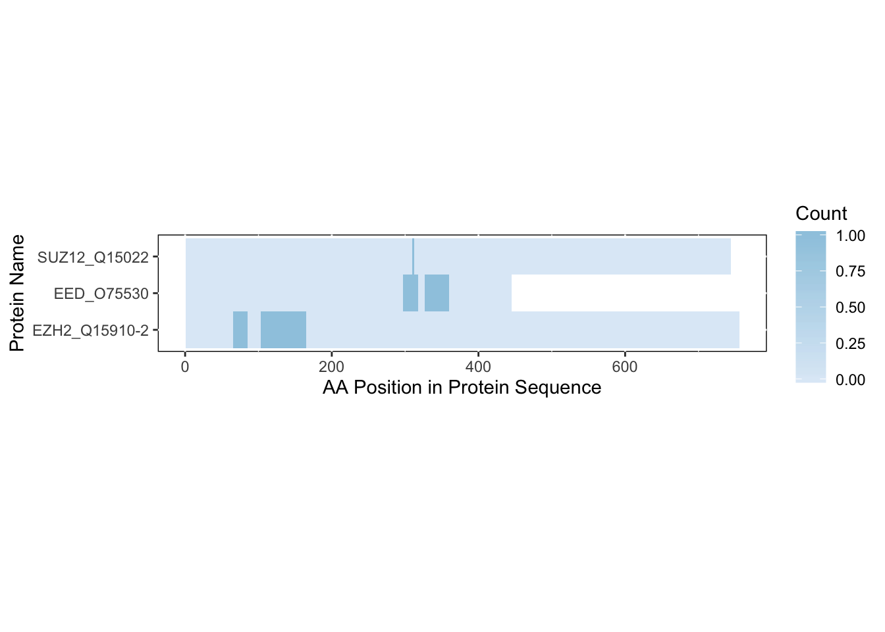
rbd.freqVector(bs_output = bs_output_fasta,
name_by = 'pro_name',
heatmap = TRUE,
db_selection = 'FASTA',
colors = c('#b3ecec','#43e8d8','#48d1cc'),
save_plot = FALSE)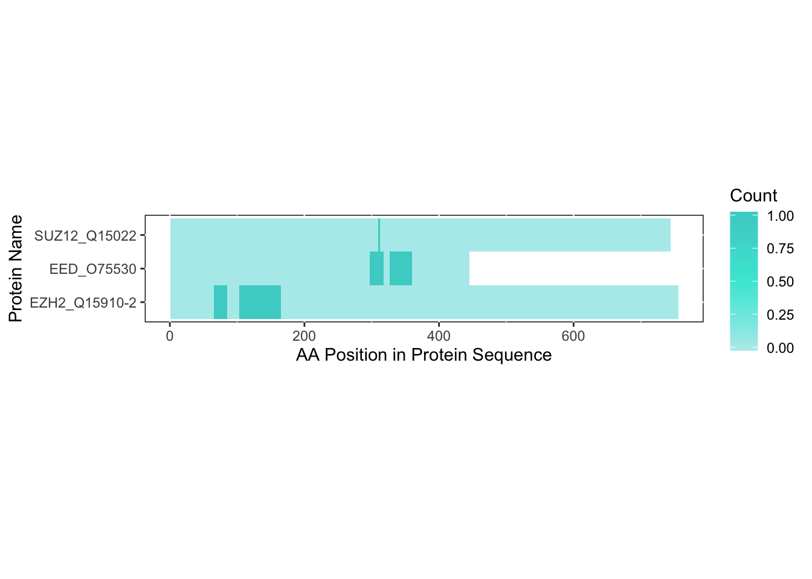
rbd.freqVector(bs_output = bs_output_fasta,
name_by = 'pro_name',
heatmap = TRUE,
db_selection = 'FASTA',
# palette from color-hex.com
colors = c("#465ca8","#7767b8","#a272c4",
"#cc7ecc",'#f38bd1'),
save_plot = FALSE)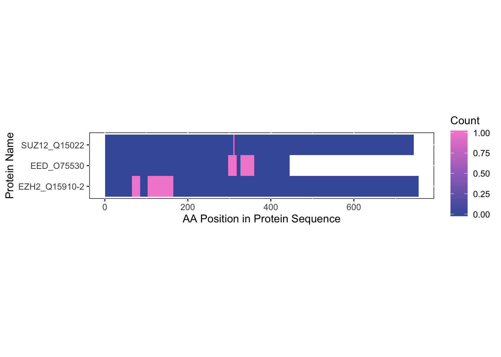
If you require further customization, we recommend saving the output from rbd.freqVector and using that as input for a heatmap. You can use the source code of rbd.freqVector for further information on how this is can be done.
Aligning Peptides to a PDB File
We will now align the binding sequences to a PDB file. For simplicity, we’ll only focus on one protein: EZH2.
ezh2_iet <- filtered_input_eluate_table[filtered_input_eluate_table$protein == 'EZH2_Q15910-2',]We already know the PDB file and chain that we want to align the proteins to. In this case, we can create and add a new table:
protein_dict <- read.csv(system.file("extdata/NSMB_misc",
'PRC2_protein_dict.csv',
package = 'crisscrosslinker',
mustWork = TRUE), fileEncoding="UTF-8-BOM")
protein_dict| protein_id | uniprot_id | pdb_id |
|---|---|---|
| EZH2_Q15910-2 | Q15910-2 | 6C23_C |
| EED_O75530 | O75530 | 6C23_L |
| RBBP4_Q09028 | Q09028 | 6C23_N |
| SUZ12_Q15022 | Q15022 | 6C23_A |
| AEBP2_Q6ZN18 | Q6ZN18-2 | 6C23_P |
Protein ID, as used for MaxQuant analysis, is under ‘protein_id’, with the corresponding UniProt accession number under ‘uniprot_id’. Note that if the canonical UniProt isoform is known, it is added by the user in the form of [ID]-[isoform], or otherwise, the canonical isoform is assumed. The last column, pdb_id, indicate the PDB accession and the chain ID, with the format [PDB accesion]_[chain].
Now we don’t have to go through menus to be able to define the PDB ID/chain that we need to use. This will save us time when making our table of binding sequences.
You can always leave the dictionary blank in order to access an interactive menu to be able to use BLAST in order to align your sequence to a known PDB structure.
bs_ezh2 <- rbd.getBSfromIET(ezh2_iet,
fasta_file = fasta_file,
align_to = 'PDB',
protein_dict = protein_dict)Let’s see how many matches we had to the chain we chose:
table(bs_ezh2$db)| Var1 | Freq |
|---|---|
| PDB | 2 |
2 linked peptides matched our chain! Let us visualize them on a PDB structure.
Making the PyMOL File
Now that we have the binding sequences aligned to a PDB file, we can create a PyMOL file (.pml). The rbd.pymol function will produce a .pml file that is essentially a plain text file which contains commands that can be read by PyMOL. Learn more about PyMOL commands here.
rbd.pymol(bs_ezh2,
color_by = 'binding_sequence',
colors = NULL) #default colors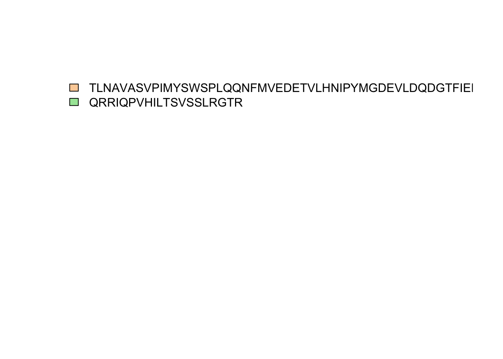

There is an additional legend with the colors corresponding to the binding sequences. The colors will be assigned based on the order the binding sequences are in. If you would like the sequences in a different order, please order them before executing rbd.pymol().
If we do not choose any colors, it will default to the PyMOL tints palette. However, we can input any RColorBrewer or viridis palette as well as standard PyMOL/R colors or hexcodes. We can also change the name of the file by editing the file.name variable if we want to test out multiple palettes without overriding previous selections.
rbd.pymol(bs_ezh2,
color_by = 'binding_sequence',
colors = 'Dark2', # RColorBrewer palette
file.name = 'pymol_Dark2.pml') 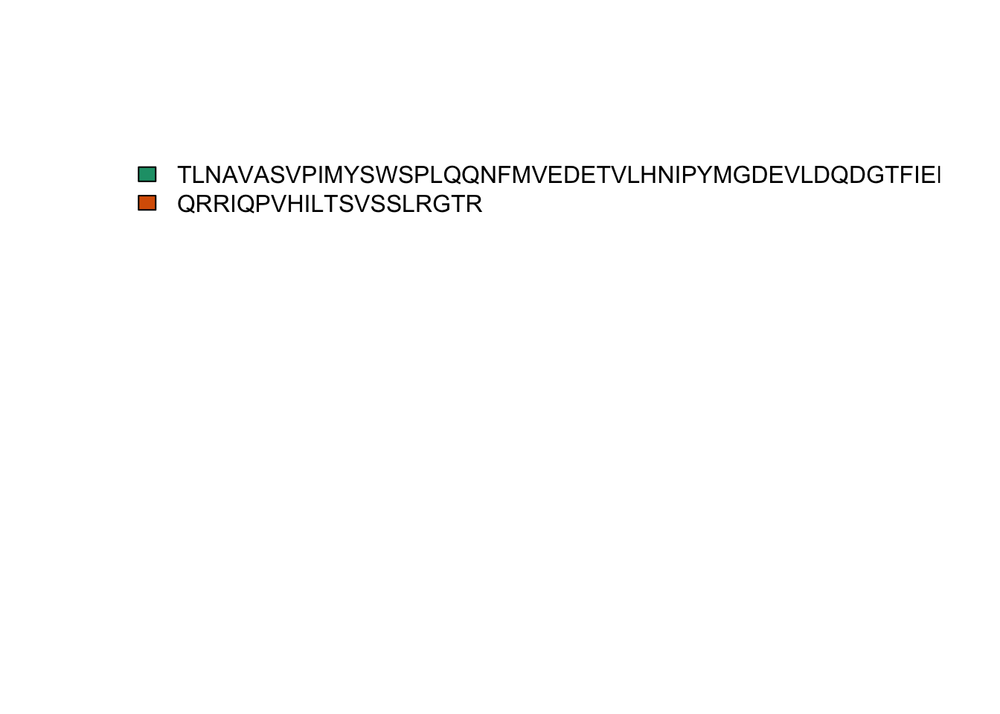
rbd.pymol(bs_ezh2,
color_by = 'binding_sequence',
colors = 'magma', # viridis palette
file.name = 'pymol_magma.pml') 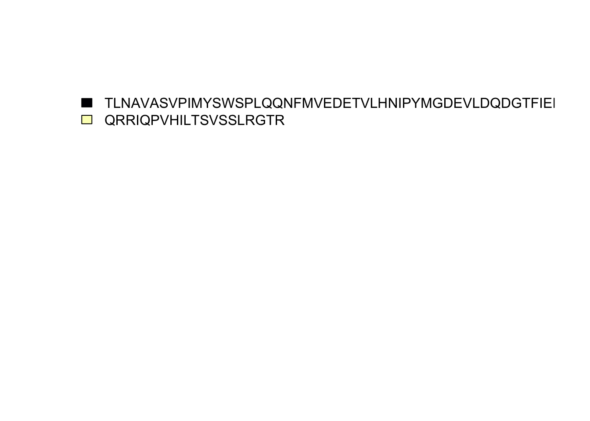
rbd.pymol(bs_ezh2,
color_by = 'binding_sequence',
colors = c('red','blue'), # standard colors
file.name = 'pymol_rgb.pml') 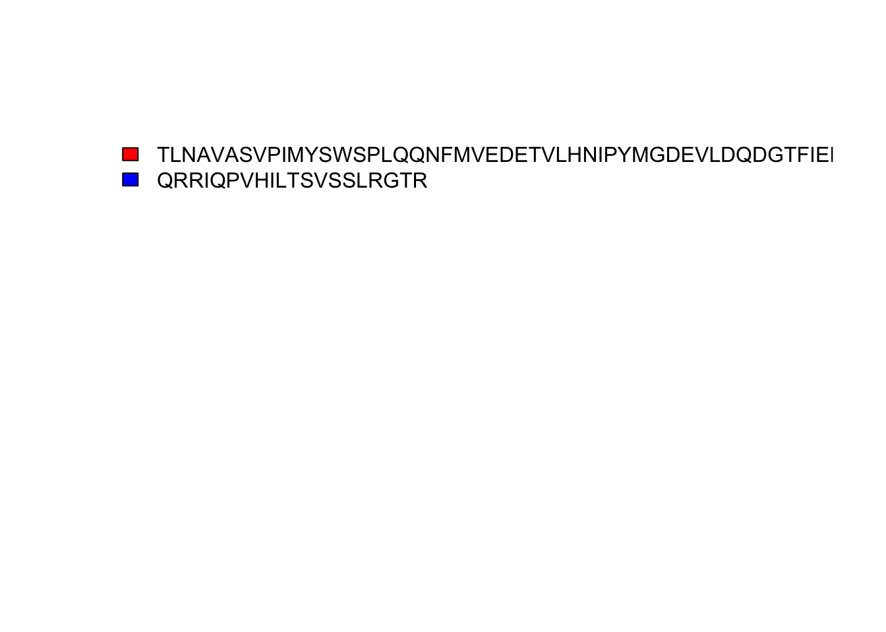
rbd.pymol(bs_ezh2,
color_by = 'binding_sequence',
colors = c("#f8a1be","#ffb6b1"), # hexcodes
file.name = 'pymol_hexcodes.pml') 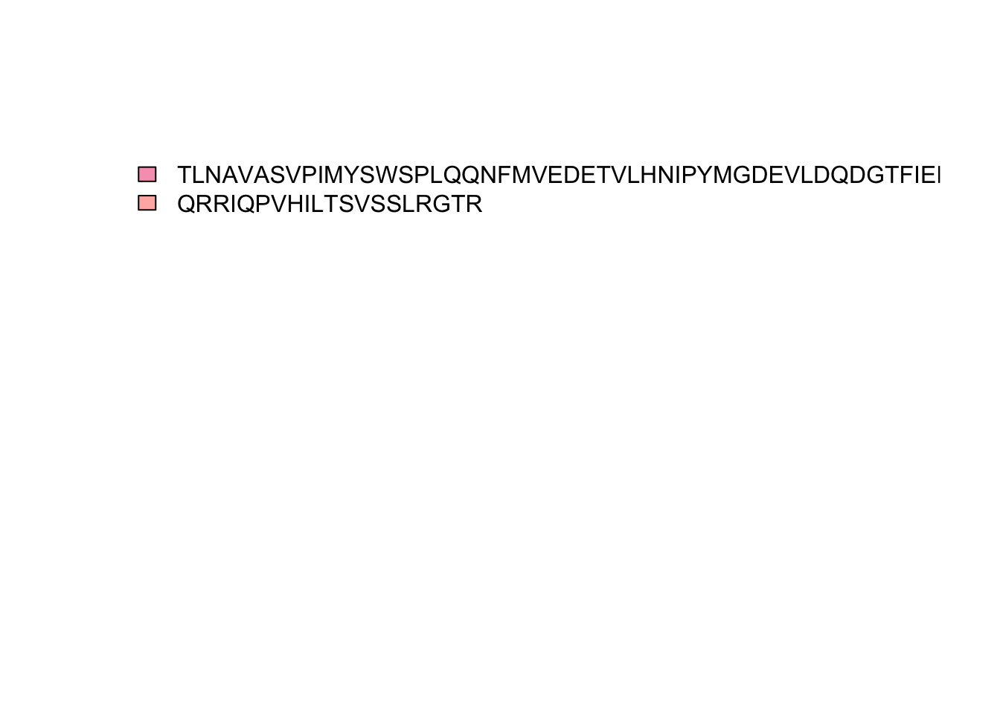
\begin{fullwidth} } \end{fullwidth}
Visualizing Multiple Repeats
We have now looked at one experiment, but now we want to look at multiple experiments we have run and compare between them. First we will do what we have done before, but combine the different runs together to examine how often these binding sites appear3.
Each of these experiments have slighly different prefixes, so we will adjust them accordingly with a list. In this instance, we could probably get away with just using “UV” for all 3 repeats. However, for the purposes of this tutorial, we will explicitly define the prefixes.
We are now ready to proceed to get the binding sequences for each of these repeats.
Visualizing Multiple Repeats on Heatmap
We’ll first start by combining all of the repeats according to the Uniprot canonical sequence so we can viusalize them on a heatmap.
bs_output_repeats_uniprot <- data.frame() #initializing dataframe
num_repeats <- 1:4 #list of repeats 1 through 4
repeat_names <- paste0('Repeat0',num_repeats) #making the names of repeats (e.g. Repeat01, Repeat02, etc.)
for(rname in repeat_names){ #going through each of the repeats
shl <- sequence_hit_list[startsWith(names(sequence_hit_list),rname)]
enames <- paste0(rname,'_',c('UV','NoXL'))
input_eluate_table <- rbd.makeIETable(shl, enames)
filtered_input_eluate_table <- input_eluate_table[input_eluate_table$eluate > 0,]
#get binding sequences
bs_output_uniprot <- rbd.getBSfromIET(filtered_input_eluate_table,
fasta_file = fasta_file,
align_to = 'UniProt',
protein_to_uniprot_id = protein_dict)
bs_output_repeats_uniprot <- rbind(bs_output_repeats_uniprot,data.frame(bs_output_uniprot)) #add data to data.frame
}We can then see the results on a heatmap by using the code we used before:
bs_repeats_freqVector <- rbd.freqVector(bs_output = bs_output_repeats_uniprot,
name_by = 'pro_name',
db_selection = 'UniProt',
heatmap = TRUE)## Saving 7 x 5 in image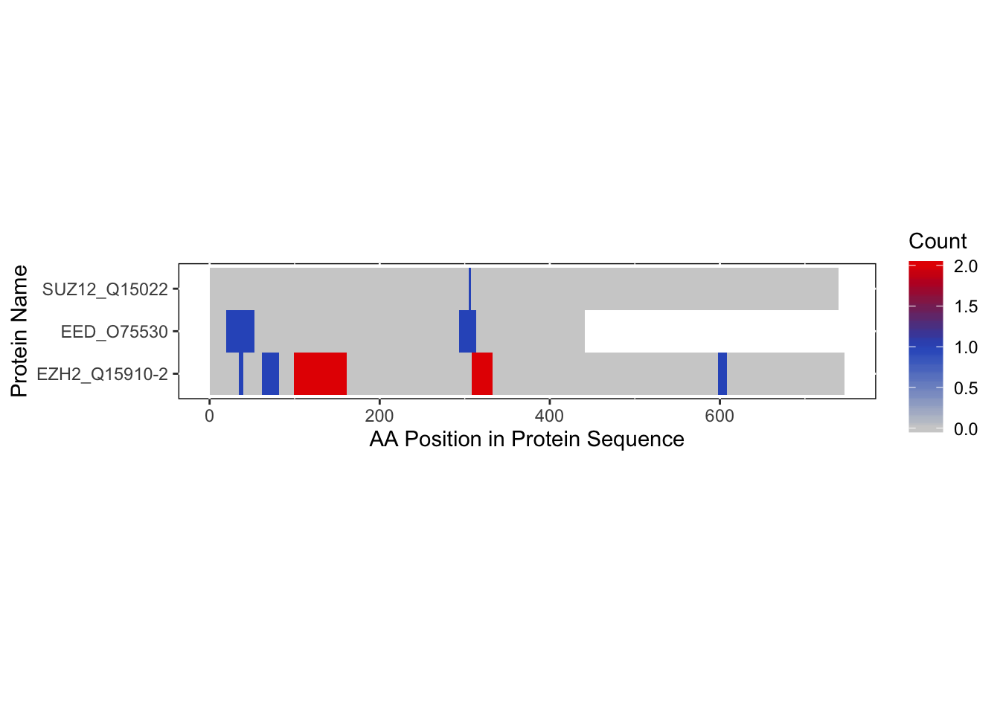
Visualizing on a PDB Structure
Before we can visualize the repeats on a structure, we must first align them to a PDB structure. We can align the sequences we found using UniProt by using the function rbd.alignBS2 and creating a data.frame of the relevant protein names, their corresponding UniProt IDs, and the PDB ID:
alignIDs <- data.frame(protID=c('EZH2_Q15910-2','EED_O75530','RBBP4_Q09028','SUZ12_Q15022','AEBP2_Q6ZN18'),uniprotID=c('Q15910-2','O75530','Q09028','Q15022','Q6ZN18-2'),pdbID=rep('6C23',5))
bs_output_repeats_pdb2 <- rbd.alignBS2(bs_output_repeats_uniprot,alignIDs,alignTo=c('pdb'),uniprot2pdb=TRUE,allowPartialBS=FALSE)Now that we have loaded the data into our R environment and have initialized the data, let’s make a PyMOL file. By default, it will also create a heatmap with the same color scheme as the PyMOL file if heatmap is kept as TRUE whose numbering will correspond to the amino acid number in the chain’s sequence, which may be different than that of the RCSB database. A legend will also be generated to go with the PyMOL file, though it will be similar to the one generated by the heatmap:
rbd.pymol(bs_output_repeats_pdb2,
color_by = 'freq',
colors = 'magma',
file.name = 'pymol_magma_diff_analysis.pml')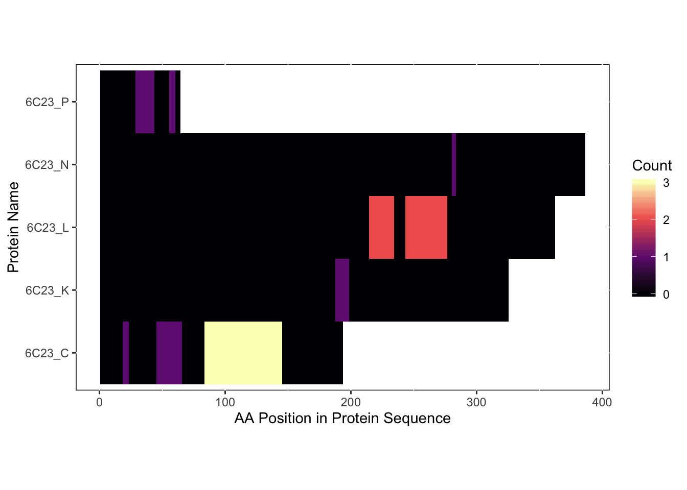
As you can see from the heatmap, there are 5 chains that contained our sequences of interest. However, two of these chains (C and K) both represent EZH2 as we can see on the RCSB PDB website:

We can then use the rest of the files generated by rbd.pymol to load the generated .pml file into PyMOL:

And the SVG file as a legend to show what each color represents (will be the same color scheme as the generated heatmap):

Session Info
devtools::session_info()## ─ Session info ──────────────────────────────────────────────────────────────────────────────
## setting value
## version R version 3.6.1 (2019-07-05)
## os macOS Mojave 10.14.3
## system x86_64, darwin15.6.0
## ui X11
## language (EN)
## collate en_US.UTF-8
## ctype en_US.UTF-8
## tz Australia/Melbourne
## date 2019-10-22
##
## ─ Packages ──────────────────────────────────────────────────────────────────────────────────
## package * version date lib source
## ade4 1.7-13 2018-08-31 [1] CRAN (R 3.6.0)
## assertthat 0.2.1 2019-03-21 [1] CRAN (R 3.6.0)
## backports 1.1.5 2019-10-02 [1] CRAN (R 3.6.0)
## bio3d * 2.3-4 2018-04-03 [1] CRAN (R 3.6.0)
## BiocGenerics * 0.30.0 2019-05-02 [1] Bioconductor
## Biostrings * 2.52.0 2019-05-02 [1] Bioconductor
## bitops * 1.0-6 2013-08-17 [1] CRAN (R 3.6.0)
## callr 3.3.2 2019-09-22 [1] CRAN (R 3.6.0)
## cli 1.1.0 2019-03-19 [1] CRAN (R 3.6.0)
## colorspace 1.4-1 2019-03-18 [1] CRAN (R 3.6.0)
## crayon 1.3.4 2017-09-16 [1] CRAN (R 3.6.0)
## crisscrosslinker * 0.9 2019-10-22 [1] Github (egmg726/crisscrosslinker@9729555)
## curl 4.2 2019-09-24 [1] CRAN (R 3.6.0)
## desc 1.2.0 2018-05-01 [1] CRAN (R 3.6.0)
## devtools * 2.2.1 2019-09-24 [1] CRAN (R 3.6.0)
## digest 0.6.22 2019-10-21 [1] CRAN (R 3.6.1)
## dplyr 0.8.3 2019-07-04 [1] CRAN (R 3.6.0)
## ellipsis 0.3.0 2019-09-20 [1] CRAN (R 3.6.0)
## evaluate 0.14 2019-05-28 [1] CRAN (R 3.6.0)
## fs 1.3.1 2019-05-06 [1] CRAN (R 3.6.0)
## gdtools * 0.2.1 2019-10-14 [1] CRAN (R 3.6.0)
## ggplot2 * 3.2.1 2019-08-10 [1] CRAN (R 3.6.0)
## glue 1.3.1 2019-03-12 [1] CRAN (R 3.6.0)
## gridExtra 2.3 2017-09-09 [1] CRAN (R 3.6.0)
## gtable 0.3.0 2019-03-25 [1] CRAN (R 3.6.0)
## highr 0.8 2019-03-20 [1] CRAN (R 3.6.0)
## htmltools 0.4.0 2019-10-04 [1] CRAN (R 3.6.0)
## httr 1.4.1 2019-08-05 [1] CRAN (R 3.6.0)
## IRanges * 2.18.3 2019-09-24 [1] Bioconductor
## jsonlite 1.6 2018-12-07 [1] CRAN (R 3.6.0)
## knitr 1.25 2019-09-18 [1] CRAN (R 3.6.0)
## labeling 0.3 2014-08-23 [1] CRAN (R 3.6.0)
## lattice 0.20-38 2018-11-04 [1] CRAN (R 3.6.1)
## lava 1.6.6 2019-08-01 [1] CRAN (R 3.6.0)
## lazyeval 0.2.2 2019-03-15 [1] CRAN (R 3.6.0)
## magrittr 1.5 2014-11-22 [1] CRAN (R 3.6.0)
## MASS 7.3-51.4 2019-03-31 [1] CRAN (R 3.6.1)
## Matrix 1.2-17 2019-03-22 [1] CRAN (R 3.6.1)
## memoise 1.1.0 2017-04-21 [1] CRAN (R 3.6.0)
## munsell 0.5.0 2018-06-12 [1] CRAN (R 3.6.0)
## openxlsx * 4.1.0.1 2019-05-28 [1] CRAN (R 3.6.0)
## pillar 1.4.2 2019-06-29 [1] CRAN (R 3.6.0)
## pkgbuild 1.0.6 2019-10-09 [1] CRAN (R 3.6.0)
## pkgconfig 2.0.3 2019-09-22 [1] CRAN (R 3.6.0)
## pkgload 1.0.2 2018-10-29 [1] CRAN (R 3.6.0)
## prettyunits 1.0.2 2015-07-13 [1] CRAN (R 3.6.0)
## processx 3.4.1 2019-07-18 [1] CRAN (R 3.6.0)
## prodlim 2018.04.18 2018-04-18 [1] CRAN (R 3.6.0)
## ps 1.3.0 2018-12-21 [1] CRAN (R 3.6.0)
## purrr 0.3.2 2019-03-15 [1] CRAN (R 3.6.0)
## R6 2.4.0 2019-02-14 [1] CRAN (R 3.6.0)
## RColorBrewer * 1.1-2 2014-12-07 [1] CRAN (R 3.6.0)
## Rcpp 1.0.2 2019-07-25 [1] CRAN (R 3.6.0)
## RCurl * 1.95-4.12 2019-03-04 [1] CRAN (R 3.6.0)
## remotes 2.1.0 2019-06-24 [1] CRAN (R 3.6.0)
## rlang 0.4.0 2019-06-25 [1] CRAN (R 3.6.0)
## rmarkdown 1.16 2019-10-01 [1] CRAN (R 3.6.0)
## rprojroot 1.3-2 2018-01-03 [1] CRAN (R 3.6.0)
## S4Vectors * 0.22.1 2019-09-09 [1] Bioconductor
## scales 1.0.0 2018-08-09 [1] CRAN (R 3.6.0)
## seqinr * 3.6-1 2019-09-07 [1] CRAN (R 3.6.0)
## sessioninfo 1.1.1 2018-11-05 [1] CRAN (R 3.6.0)
## stringi 1.4.3 2019-03-12 [1] CRAN (R 3.6.0)
## stringr * 1.4.0 2019-02-10 [1] CRAN (R 3.6.0)
## survival 2.44-1.1 2019-04-01 [1] CRAN (R 3.6.1)
## svglite * 1.2.2 2019-05-17 [1] CRAN (R 3.6.0)
## systemfonts 0.1.1 2019-07-01 [1] CRAN (R 3.6.0)
## testthat 2.2.1 2019-07-25 [1] CRAN (R 3.6.0)
## tibble 2.1.3 2019-06-06 [1] CRAN (R 3.6.0)
## tidyselect 0.2.5 2018-10-11 [1] CRAN (R 3.6.0)
## tufte * 0.5 2019-05-12 [1] CRAN (R 3.6.0)
## usethis * 1.5.1 2019-07-04 [1] CRAN (R 3.6.0)
## viridis * 0.5.1 2018-03-29 [1] CRAN (R 3.6.0)
## viridisLite * 0.3.0 2018-02-01 [1] CRAN (R 3.6.0)
## withr 2.1.2 2018-03-15 [1] CRAN (R 3.6.0)
## xfun 0.10 2019-10-01 [1] CRAN (R 3.6.0)
## XML * 3.98-1.20 2019-06-06 [1] CRAN (R 3.6.0)
## xml2 1.2.2 2019-08-09 [1] CRAN (R 3.6.0)
## XVector * 0.24.0 2019-05-02 [1] Bioconductor
## yaml 2.2.0 2018-07-25 [1] CRAN (R 3.6.0)
## zip 2.0.4 2019-09-01 [1] CRAN (R 3.6.0)
## zlibbioc 1.30.0 2019-05-02 [1] Bioconductor
##
## [1] /Library/Frameworks/R.framework/Versions/3.6/Resources/libraryReferences
Castello, A. et al. Comprehensive Identification of RNA-Binding Domains in Human Cells. Molecular Cell 63, 696-710, doi:10.1016/j.molcel.2016.06.029 (2016).
Tyanova, S., Temu, T. & Cox, J. The MaxQuant computational platform for mass spectrometry-based shotgun proteomics. Nature Protocols 11, 2301-2319, doi:10.1038/nprot.2016.136 (2016).
Zhang, Q. et al. RNA exploits an exposed regulatory site to inhibit the enzymatic activity of PRC2. Nature Structural & Molecular Biology, doi:10.1038/s41594-019-0197-y (2019).
The data for this tutorial is available here.The relevant files are located within the .zip files for each repeat as MaxQuant_txt_folder_output/peptides.txt. For simplicity, all “peptides.txt” files have been re-named according to their experiment numbers as part of the external data available in
crisscrosslinkeR.↩These variables correspond to the
ggplot2input variables that is used to generate this plot.↩Since slightly different but overlapping peptides may show up due to the use of different proteases, the frequency is measured by the amino acid rather than the full peptide.↩